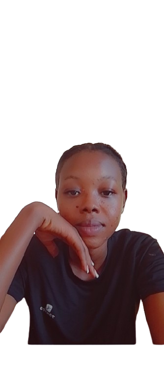

Favour Eseoghe Ehiagwina also known as Favie was born on February 21, 2006. She is a Nigerian citizen and a website developer who builds clean and responsive websites. She started her Web Development journey in the year 2023 after coming across inspiring people who encouraged her into diving down the Digital world. Favour got her West African Education Council (WAEC) Certificate at Cream Crest Group of School, and her Diploma in Software and Web development at Auchi Polytechnic in Auchi, Edo State, Nigeria. In terms of skills She is a Virtual Assistant, a Graphics Designer, an Hairstylist and a Nail Technician. Her hobbies are reading, drawing, and playing chess